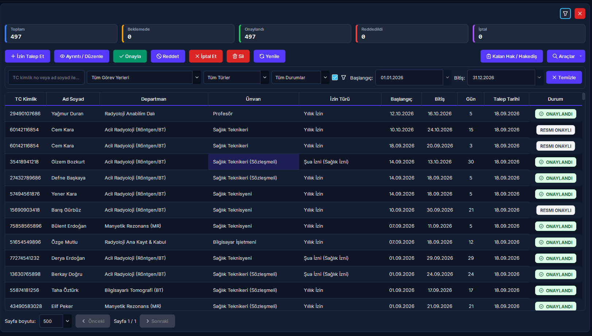
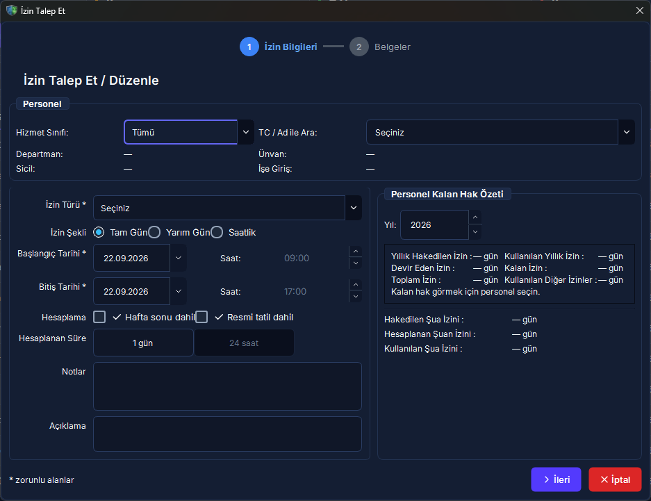

İzin Yönetimi, Şua Hakedişi & İzin Devir Motoru
Radyasyonla çalışan sağlık personelinin yasal Şua İzni (sağlık izni), yıllık izin, mazeret ve hastalık izinlerinin talebi, nöbet ve çakışma kontrolleri, yetkili onayı, bakiye düşümü, geçmiş yıl devir aktarımı ve EBYS/HBYS evrak entegrasyonu rehberi.
Hızlı Reçete: Radyasyon İzinleri ve Yasal Hakediş Süreci
Personelin hak ettiği izinleri mevzuata uygun kullandırmak, nöbet aksamalarını önlemek ve bakiye kayıplarını sıfırlamak.
[İzin Talep Et] sihirbazından personeli ve tarihleri seçin, yönetici ekranından onaylayın veya web portalından [EBYS Kaydet] ile resmiyete dökün.
Nöbet çakışmaları engellenir, onay anında bakiye düşülür, iptal halinde bakiye iade edilir; şua izni 31 Aralık'ta devretmeksizin yanar.
5N1K Kural ve Arayüz Çözümleme Tablosu
İzin modülünde yer alan kontrollerin yasal dayanakları, çalışma mekanizmaları ve kullanıcı rolleri.
Kritik Sahada Yanlış Bilinen Kurallar (Mit Avcısı)
Saha Mit Avcısı: "Kullanılmayan Şua İzinleri Bir Sonraki Yıla Devreder mi ya da Paraya Çevrilebilir mi?"
En Yaygın Radyasyon Mevzuatı YanılgısıYanlış İnanış: "Yoğunluktan ötürü bu yıl 30 günlük şua iznimi kullanamadım, seneye aktarılır 60 gün kullanırım veya kullanamadığım günlerin ücretini idareden talep edebilirim."
Doğru Gerçek: KESİNLİKLE HAYIR. 3153 sayılı Kanun, Radyasyon Güvenliği Yönetmeliği ve Sağlık Bakanlığı içtihatları uyarınca Şua İzni (sağlık izni), personelin vücudundaki radyasyon biyolojik hasarını tolere etmek ve hücresel onarımı sağlamak amacıyla verilmiş kamu düzenine ilişkin bir dinlenme hakkıdır. Şua izni ertelenemez, takvim yılı (31 Aralık) bittiğinde zaman aşımına uğrayarak yanar, sonraki yıla devredilemez veya nakdi tazminata dönüştürülemez. RADPYS hakediş motoru bu nedenle şua izinlerini cari yılda kilitler ve yıl sonu devrine izin vermez.
İzin Talep, Çakışma Denetimi ve Onay Akış Şeması
Personel izin talebinden bakiye kontrolüne, nöbet çakışmasından EBYS evrak kaydına tam süreç döngüsü.
Arayüz Ekran Görünümleri
İzin Listesi kokpiti ve 2 adımlı İzin Talep Sihirbazı ekranları.


Adım Adım İşlem Rehberi
Saha operasyonlarında en sık kullanılan 5 ana işlemin uygulama adımları.
2 Adımlı Sihirbaz ile Yeni İzin Talebi Oluşturma
- İzin Listesi ekranının sol üst köşesindeki mor [+ İzin Talep Et] butonuna tıklayın.
- Açılan sihirbazın 1. Adımında:
- Personel Seçimi: TC Kimlik veya Ad ile personeli bulun.
- Bakiye Kontrolü: Sağ taraftaki panelde personelin cari yıldaki Yıllık Hakedilen, Devir Eden ve Şua İzni kalan haklarını kontrol edin.
- Alt kısımdaki [İleri >] butonuna basarak 2. Adıma geçin:
- İzin Türü: Yıllık İzin, Şua İzni (Sağlık İzni), Mazeret İzni vb. seçin.
- Başlangıç / Bitiş Tarihleri: Tarihleri seçtiğinizde sistem resmi tatil ve hafta sonu parametrelerine göre net gün ve saat süresini otomatik hesaplar.
- Vekil Personel: İzin esnasında görevi devralacak meslektaşınızı belirleyin.
- [Kaydet] butonuna basın. Çakışma ve nöbet kontrolleri olumluysa talep 'Onay Bekliyor' statüsünde listeye düşecektir.
İzin Taleplerini İnceleme, Onaylama ve Gerekçeli Reddetme
- İzin Listesinde üst filtrelerden durumu 'Beklemede' olarak seçin.
- İncelenmek istenen satırı tıklayın veya detaylarını görmek için [Ayrıntı / Düzenle] butonuna basın.
- Onaylamak İçin: Yeşil renkli [Onayla] butonuna tıklayın. Sistem personelin izin bakiyesinden gün sayısını anında düşer ve satır rozetini yeşil 'ONAYLANDI' yapar.
- Reddetmek İçin: Kırmızı renkli [Reddet] butonuna tıklayın. Açılan pencereye ret gerekçesini yazıp onaylayın. Durum 'REDDEDİLDİ' olur, personelin bakiyesine dokunulmaz.
Onaylı İzni Güvenle İptal Etme ve Bakiye İadesi
- Önceden onaylanmış ancak acil görev, nöbet veya plan değişikliği nedeniyle çıkılamayan izni listeden seçin.
- Üst araç çubuğundaki turuncu [İptal Et] butonuna basın.
- Ekrana gelen onay uyarısında 'Evet' dediğinizde sistem izin kaydını 'İPTAL EDİLDİ' statüsüne alır.
- Önceden personelin bakiyesinden düşülen tüm izin günleri, personelin izin havuzuna otomatik ve eksiksiz olarak geri iade edilir.
- Not: Onaylı izinlerin kalıcı olarak silinmesi yasal denetim izi gereğince engellenmiştir; daima İptal Et işlemi uygulanmalıdır.
İzin Hakedişlerini İnceleme ve Geçmiş Yıl Devri Aktarma
- İzin Listesi sağ üst araç çubuğundaki [Kalan Hak / Hakediş] butonuna veya sol menüden hakediş sayfasına geçin.
- Yıl seçicisinden incelemek istediğiniz takvim yılını belirleyin. Tüm personelin hakediş, devir ve kullanılan gün toplamları listelenir.
- Ocak ayı başında geçmiş tamamlanmış yıldan kalan izinleri aktarmak ve Şua hakedişini kesinleştirmek için [Devir Aktar & Yılını Kilitle] butonuna tıklayın.
- Sistem, yıllık izin devrini tavan sınırına (en fazla 5 gün) göre aktarır. Aynı anda kaynak yılın 12 aylık fiili hizmet puantajını tarayarak personellerin yeni yıl Şua İzni hakedişlerini yasal bareme (her 50 saate 1 gün, azami 30 gün) göre kesinleştirir ve kaynak yılı yıllık kilitle dondurur. Bu toplu işlem arka planda asenkron olarak yürütülür; arayüz donmaz, canlı yüzde ilerleme penceresi görüntülenir ve işlem bittiğinde özet sonuç kartı iletilir. Kaynak yıl kilitlendikten sonra buton metni [Devir Aktar (Kilitli)] olarak güncellenir.
Web Portalından İzin Talebi ve EBYS Evrak Numarası Eşleştirme
- Saha personeli veya amir kurum içi Web Portalına (`web_portal`) kullanıcı adı ve şifresiyle giriş yapar.
- [İzinlerim] sekmesinden hızlıca yeni izin talebi gönderir veya onaylı izinlerinin listesini görüntüler.
- Kurum genel evrak biriminden resmi EBYS onay yazısı çıktığında, izin satırındaki [EBYS Kaydet] formuna resmi evrak sayısı ve tarihini girer.
- Sistem ilk evrak kaydında izni doğrudan 'RESMİ ONAYLI' statüsüne yükseltir ve masaüstü yönetim tablosuna anında yansıtır.
Sıkça Sorulan Sorular (SSS)
Şua izni hak etmek için kaç saat fiili radyasyon çalışması gerekir?
Mevzuat ve RADPYS kural motoru gereğince (RED-IZN-01), radyasyon denetimli alanlarında fiilen çalışılan her 50 saatlik süre 1 günlük şua izni kazandırır. Yıllık toplam hakediş en fazla 30 takvim günüdür. Bir takvim yılında çalışılan süreler karşılığında kazanılan şua izni, takip eden yılda kullandırılır.
İzin talebi gönderirken neden 'Nöbet Çakışması Uyarısı' alıyorum?
RADPYS, nöbet hizmetlerinin aksamaması için izin motoru ile nöbet planlama modülünü entegre çalıştırmaktadır (RED-IZN-02). Talep ettiğiniz tarihlerde aktif nöbet çizelgesinde üzerinize yazılmış bir nöbet görevi bulunuyorsa izin talebi engellenir. Bu durumda önce nöbet sorumlunuzla görüşerek nöbetinizi devretmeli veya takas etmelisiniz.
Onaylanmış veya Resmi Onaylı bir izni tablodan silebilir miyim?
Hayır. Resmi denetim izini korumak amacıyla onaylanmış veya resmi EBYS numarası işlenmiş izinlerin doğrudan silinmesi engellenmiştir. Eğer personelin izni iptal edilecekse [İptal Et] butonu kullanılır. Bu işlem izin kaydını silmeden iptal eder ve düşülen günleri personelin kalan bakiye havuzuna otomatik olarak iade eder.
Geçmiş yıldan kaç gün izin devredilebilir? Cari yıl içinde devir yapılır mı?
Devir aktarımı yalnızca takvim yılı tamamlanmış geçmiş yıllar için uygulanabilir. Devam eden cari yıl bitmeden yeni yıla devir yapılamaz. Kurum parametrelerine göre devredilebilecek azami yıllık izin süresi en fazla 5 gündür. Tavanı aşan kalan izin günleri mevzuat gereğince yeni yıla devretmez ve dondurulur.